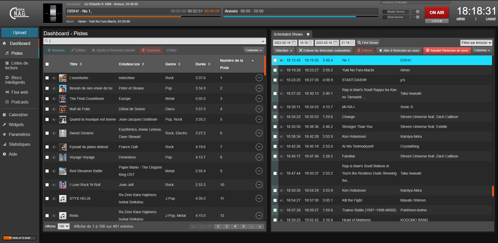

Avec un ami nous avons eu l'envie de créer une web-radio pour pouvoir s'amuser a faire des émissions parlant de sujets divers et variés et qu'on puisse aussi écouter de la musique qu'on aime, on héberge donc notre radio grace au logiciel LibreTime c'est une reprise d'AirTime et c'est opensource et facile a utiliser meme si il faut prendre le temps de bien comprendre comment tout fonctionne et réussir a tout configurer mais en suivant les instructions donné sur le site normalement il n'y a aucun problème
Voici une image de l'interface pour gérer la radio :
Pour écouter la radio cela se passe sur un autre site dévelloper par mon ami si vous voulez le visitez ca se passe juste la : https://radio-nag.guillarda.fr/